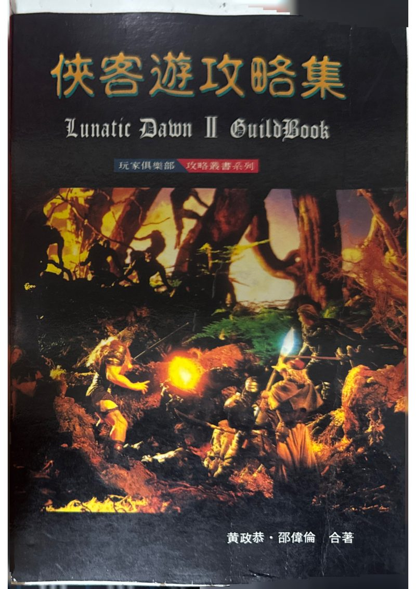
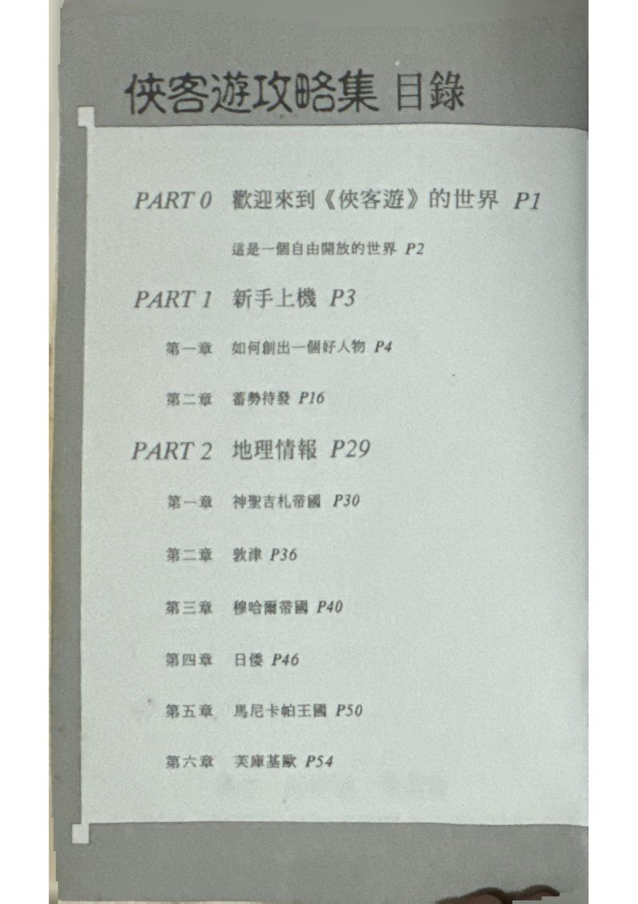
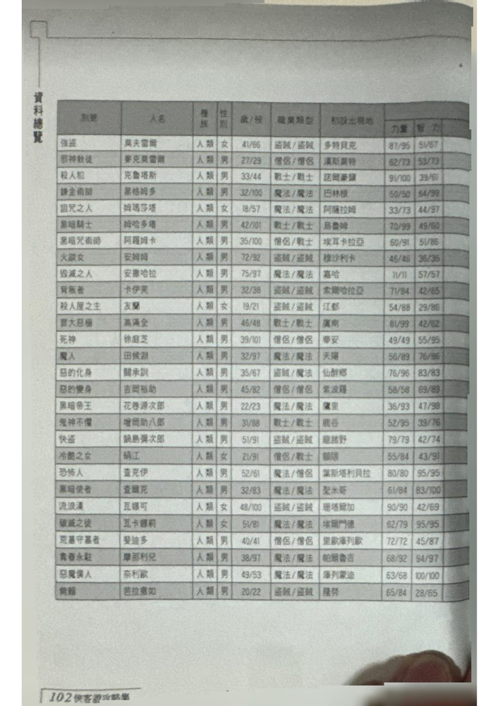
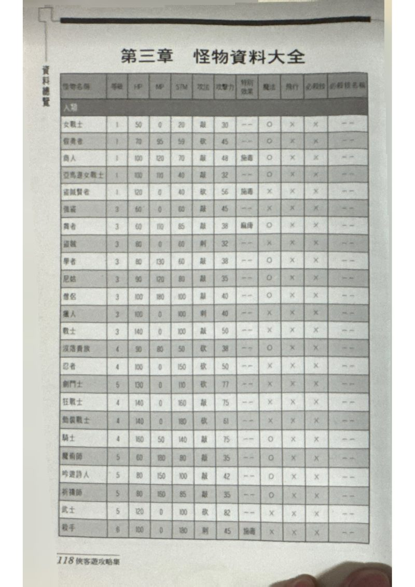
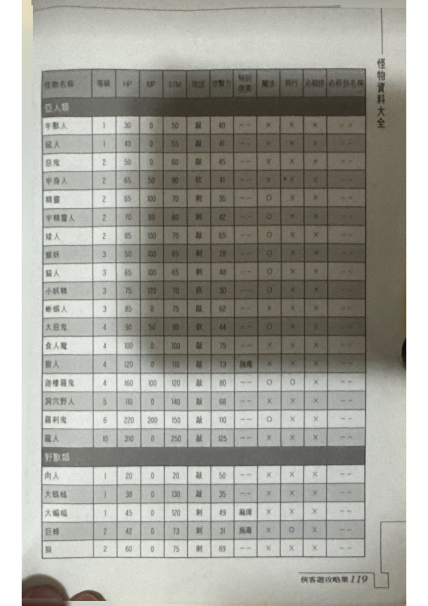
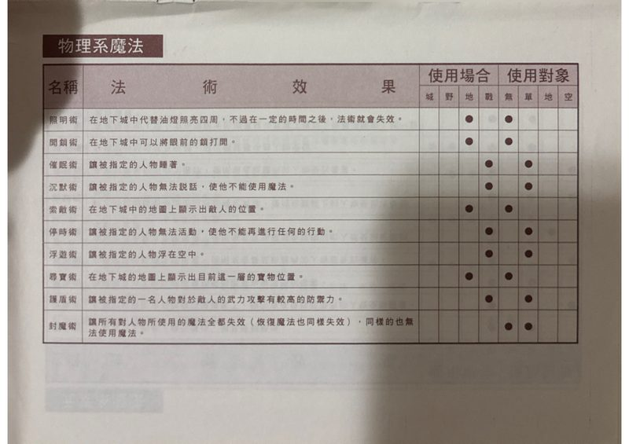
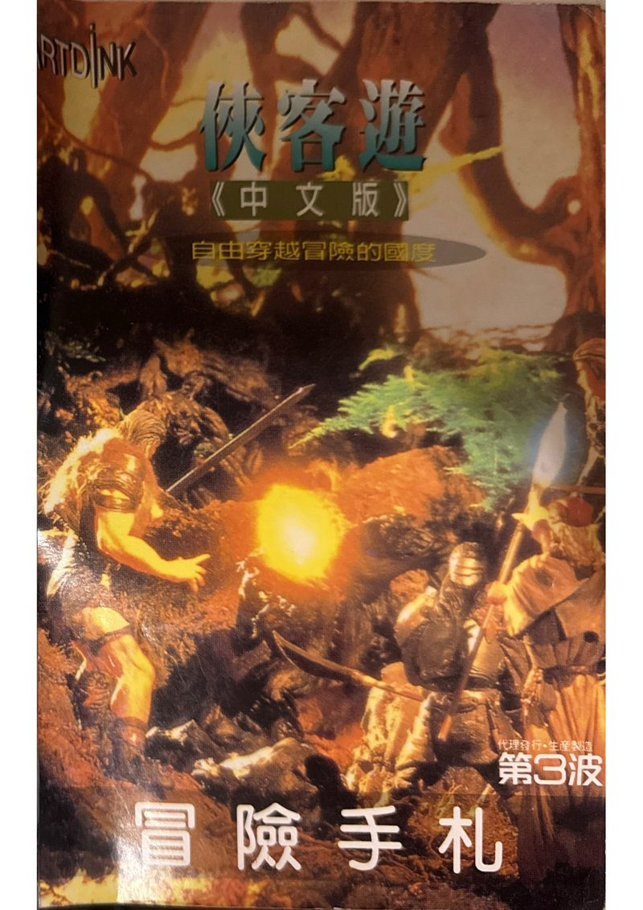
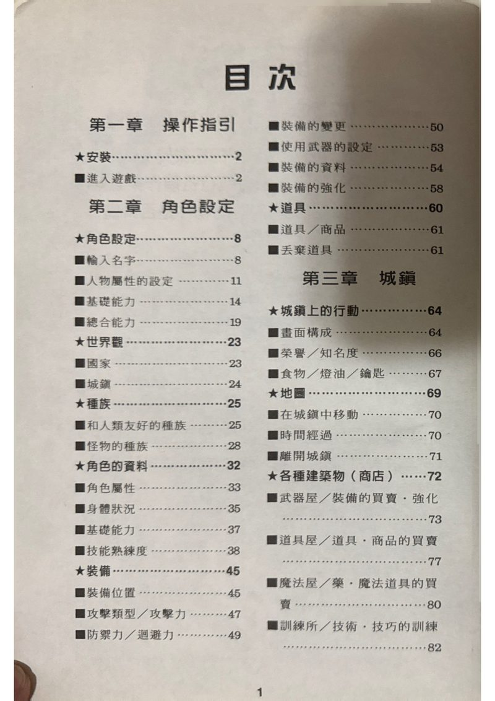

1996 年第三波文化事業股份有限公司代理日本 Artdink《Lunatic Dawn II 俠客遊 II》中文版時，隨遊戲附贈兩本紙本書：
這兩本書以 iPhone CamScanner 在 2026 年由 toni 重新掃描典藏，作為這個數位資料庫的「事實對照源」。
二進制逆向出來的數值會跟攻略書互相驗證。






Lv=3 HP=60 ATK=45
攻略集 P118 強盜：Lv=3 HP=60 ATK=45 EXP=40

⏳ 完整 PDF 電子典藏：
原始掃描 PDF 共 117 MB + 104 MB ≈ 221 MB，超過 GitHub repo 體積建議。
未來將上傳 Google Drive 並提供下載連結，本頁僅放 8 張關鍵頁的網頁優化版（總 967 KB）。
⏳ 逐欄對照： 把攻略集 P118-130 的 128 隻怪物完整數值（含 必殺技名稱）人工 OCR 出來， 用來驗證 MONSTER.DAT 全部 12 個欄位 offset 解讀，並補上「必殺技名稱」資料。
⏳ 武器防具對照： 把攻略集 P104-117 的 211 件武器數值對照 ITEMDATA.MST，驗證 28 個 offset 解讀。
⏳ 說明書畫面截圖： 說明書內含遊戲畫面截圖（戰鬥介面、迷宮探索、城鎮 UI），是 DDT 圖像逆向結果的「ground truth」對照。